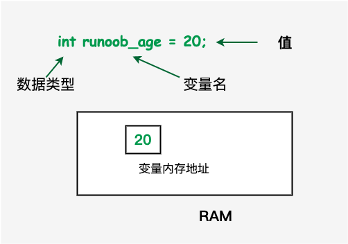

C++ 変数型
変数とは、実際にはプログラムが操作できる記憶領域の名前にすぎません。
C++ では、さまざまな種類のデータを格納するために使用できる複数の変数型があります。
C++ では、各変数には指定された型があります。型は変数の格納サイズとレイアウトを決定し、その範囲内の値はメモリに格納でき、演算子は変数に適用できます。
変数名は、文字、数字、アンダースコア文字で構成できます。英文字またはアンダースコアで始まる必要があります。
大文字と小文字は区別されます。C++ は大文字と小文字を区別するからです。
前の章で説明した基本型に基づいて、以下にいくつかの基本的な変数型があります。これらについては次の章で説明します。
| 型 | 説明 |
|---|---|
| bool | ブール型。値 true または false を格納し、1 バイトを占有します。 |
| char | 文字型。ASCII 文字を格納するために使用され、通常 1 バイトを占有します。 |
| int | 整数型。通常、通常の整数を格納するために使用され、通常 4 バイトを占有します。 |
| float | 単精度浮動小数点型。単精度浮動小数点数を格納するために使用されます。単精度は、1 ビットの符号、8 ビットの指数、23 ビットの小数部という形式で、通常 4 バイトを占有します。
|
| double | 倍精度浮動小数点型。倍精度浮動小数点数を格納するために使用されます。倍精度は、1 ビットの符号、11 ビットの指数、52 ビットの小数部で、通常 8 バイトを占有します。
|
| void | 型が存在しないことを表します。 |
| wchar_t | ワイド文字型。より広い範囲の文字を格納するために使用され、通常 2 バイトまたは 4 バイトを占有します。 |


C++ では、次のような他のさまざまな型の変数を定義することもできます。列挙、ポインタ、配列、参照、データ構造、クラスなどです。これらについては後続の章で説明します。
整数型（Integer Types）：
int：整数を表すために使用され、通常4バイトを占有します。short：短整数を表すために使用され、通常2バイトを占有します。long：長整数を表すために使用され、通常4バイトを占有します。long long：より長い整数を表すために使用され、通常8バイトを占有します。
浮動小数点型（Floating-Point Types）：
float：単精度浮動小数点数を表すために使用され、通常4バイトを占有します。double：倍精度浮動小数点数を表すために使用され、通常8バイトを占有します。long double：より高精度の浮動小数点数を表すために使用され、占有バイト数は実装によって異なる場合があります。
文字型（Character Types）：
char：文字を表すために使用され、通常1バイトを占有します。wchar_t：ワイド文字を表すために使用され、通常2または4バイトを占有します。char16_t：16ビットUnicode文字を表すために使用され、2バイトを占有します。char32_t：32ビットUnicode文字を表すために使用され、4バイトを占有します。
ブール型（Boolean Type）：
bool：ブール値を表すために使用され、取り得る値はtrue或false。
列挙型（Enumeration Types）：
enum：名前付き整数定数のセットを定義するために使用されます。
ポインタ型（Pointer Types）：
type*：型がtypeであるオブジェクトを指すポインタを表すために使用されます。
配列型（Array Types）：
type[]或type[size]：同じ型の要素で構成される配列を表すために使用されます。
構造体型（Structure Types）：
struct：異なる型の複数のメンバーを含む構造体を定義するために使用されます。
クラス型（Class Types）：
class：プロパティとメソッドを持つカスタム型を定義するために使用されます。
共用体型（Union Types）：
union：同じメモリ位置に異なるデータ型を格納できる特別なデータ型を定義するために使用されます。
C++では、型の長さ（つまり占有バイト数）はコンパイラとコンピュータアーキテクチャに依存します。しかし、C++標準は具体的なバイト数ではなく、さまざまな整数型の最小範囲を規定しています。これは、コードが異なるシステムでも正しく実行されることを保証するためです。
上記の型の範囲は C++ 標準で規定された最小要件にすぎないことに注意してください。実際には、多くのシステムでこれらの型はより多くのバイトを占有する可能性があります。たとえば、多くの現代のコンピュータでは int は通常 4 バイトを占有し、long は 8 バイトを占有する場合があります。
以下では、さまざまな型の変数を定義、宣言、使用する方法について説明します。
C++ における変数の定義
変数の定義とは、コンパイラに変数のストレージをどこに作成するか、そしてどのように作成するかを指示することです。

変数の定義はデータ型を指定し、その型の 1 つ以上の変数のリストを含みます。次のようになります。
type variable_list;
ここで、typeは有効な C++ データ型でなければならず、char、wchar_t、int、float、double、bool、または任意のユーザー定義オブジェクトを使用できます。variable_listは 1 つ以上の識別子名で構成でき、複数の識別子はカンマで区切ります。以下にいくつかの有効な宣言を示します。
行 int i, j, k;変数 i、j、k を宣言および定義し、コンパイラに int 型の i、j、k という名前の変数を作成するよう指示します。
変数は宣言時に初期化（初期値の指定）することができます。初期化子は等号の後に定数式が続く形式で、次のようになります。
以下にいくつかの例を示します。
初期化を伴わない定義: 静的ストレージ期間を持つ変数は暗黙的に NULL（すべてのバイトの値が 0）に初期化されます。他のすべての変数の初期値は未定義です。
C++ における変数の宣言
変数の宣言は、変数が指定された型と名前で存在することをコンパイラに保証し、コンパイラは変数の完全な詳細を知らなくてもコンパイルを続行できます。変数の宣言はコンパイル時にのみ意味を持ち、プログラムのリンク時にはコンパイラは実際の変数定義を必要とします。
複数のファイルを使用し、変数をそのうちの 1 つのファイルでのみ定義する場合（定義しているファイルはプログラムのリンク時に利用可能です）、変数の宣言は非常に有用です。次を使用できます。externキーワードを使用すると、どこでも変数を宣言できます。C++ プログラムでは変数を複数回宣言できますが、変数は特定のファイル、関数、またはコードブロック内で一度だけ定義できます。
例
次の例を試してください。この例では、変数は先頭で宣言されていますが、定義と初期化は main 関数内で行われます。
例
上記のコードをコンパイルして実行すると、次の結果が生成されます。
30 23.3333
同様に、関数の宣言では関数名を提供し、関数の実際の定義はどこで行ってもかまいません。例：
C++ における左辺値（Lvalues）と右辺値（Rvalues）
C++ には 2 種類の式があります。
- 左辺値（lvalue）：メモリ位置を指す式は左辺値（lvalue）式と呼ばれます。左辺値は代入演算子の左側または右側に現れることができます。
- 右辺値（rvalue）：右辺値（rvalue）という用語は、メモリ内の何らかのアドレスに格納されている数値を指します。右辺値は代入できない式であり、つまり、右辺値は代入演算子の右側に現れることができますが、左側には現れることができません。
変数は左辺値であるため、代入演算子の左側に現れることができます。数値リテラルは右辺値であるため、代入できず、代入演算子の左側に現れることはできません。次は有効なステートメントです。
int g = 20;
しかし、次のステートメントは有効ではなく、コンパイル時エラーが生成されます。
10 = 20;その他の拡張